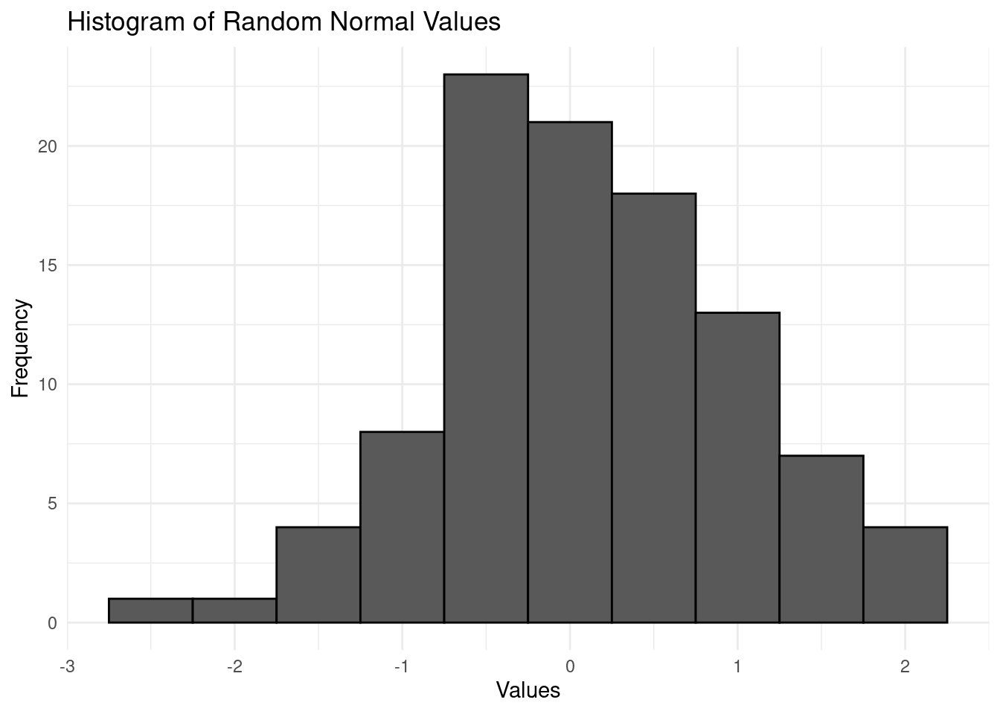
1 An Introduction to Changepoint Detection
1.1 Introduction to Time Series
In this module, we will be dealing with time series. A time series is a sequence of observations recorded over time (or space), where the order of the data points is crucial.
1.1.1 What is a time series?
In previous modules, such as Likelihood Inference, we typically dealt with data that was not ordered in a particular way. For example, we might have worked with a sample of independent Gaussian observations, where each observation is drawn randomly from the same distribution. This sample might look like the following:
\[ y_i \sim \mathcal{N}(0,1), \ i = 1, \dots, 100 \]
Here, \(y_i\) represents the \(i\)-th observation, and the assumption is that all observations are independent and identically distributed (i.i.d.) with a mean of 0 and variance of 1.
In this case, the observations do not have any particular order, and our primary interest may be in estimating parameters such as the mean, variance, or mode of the distribution. This is typical for traditional inference, where the order of observations is not of concern.
However, a time series involves a specific order to the data—usually indexed by time, although it could also be by space or another sequential dimension. For example, we could assume that the Gaussian sample above is a sequential process, ordered by the time we drew an observation. Each observation corresponds to a specific time point \(t\).
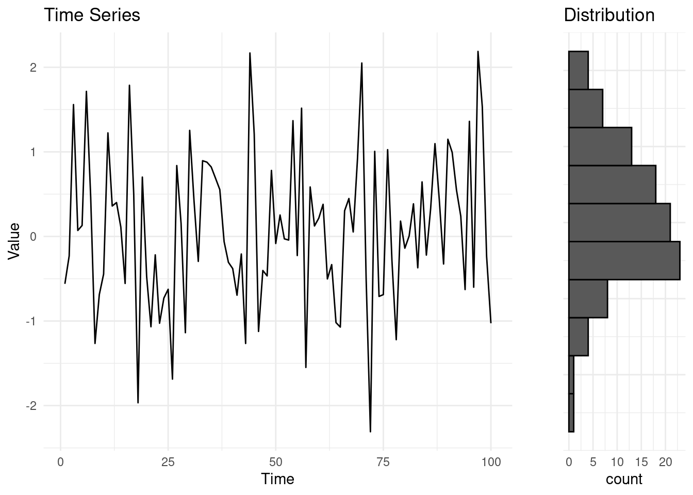
Formal Notation. In time series analysis, use an index \(t\) to represent time or order on a given set of observations. The time series vector is written as:
\[ y_{1:n} = (y_1, y_2, \dots, y_n). \]
Here, \(n\) is the total length of the sequence, and \(y_t\) represents the observed value at time \(t\), for \(t = 1, 2, \dots, n\). In our previous example, for instance, \(n = 100\).
Often, we are also interested in subsets of a time series, especially when investigating specific “windows” or “chunks” of the data. A subset of a time series, starting from time \(l\) to time \(u\), with \(l \leq u\), will be denoted by the following:
\[ y_{l:u} = (y_l, y_{l+1}, \dots, y_u), \]
Where if \(l = u\), \(y_{l:l} = (y_l)\).
1.1.2 Properties of time series
Time series can have various statistical properties that explain how they behave over time, and they can be characterized based on those. Let us look at three examples of time series:
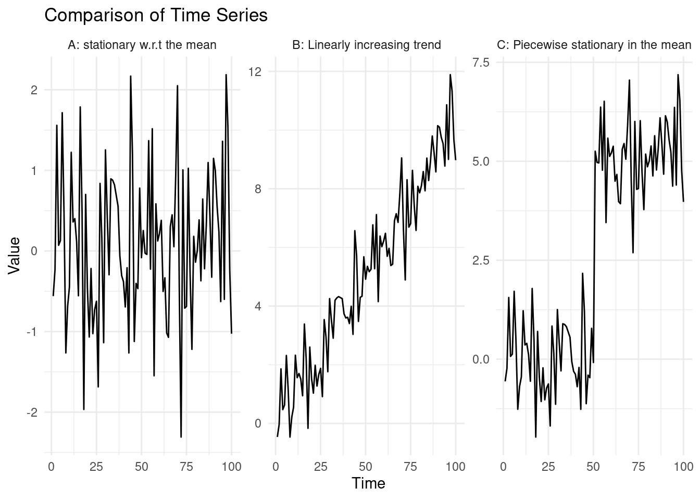
The leftmost time series, was generated by sampling random normal variables \(y_t = \epsilon_t, \ \epsilon_t \sim \mathcal{N}(0, 1)\). In this case: \[ \mathbb{E}(y_t) = \mathbb{E}(\epsilon_t) = 0, \ \text{Var}(y_t) = \text{Var}(\epsilon_t) = 1, \ \forall \ t \in \{1, ..., 100\}. \]
Say we generate more observations under the same random process, this will give us still a value that will be centered on 0, with variance 1, e.g. \(\mathbb{E}(y_{150}) = 0, \ \text{Var}(y_{150}) = 1\).
In the centre time series, the series is generated as: \[ y_t = \epsilon_t + 0.1 \cdot t , \ \epsilon_t \sim \mathcal{N}(0, 1). \]This creates a time series with a linear upward trend. Similarly to what done before: \[ \mathbb{E}(y_t) = \mathbb{E}(\epsilon_t) + \mathbb{E}(0.1 \cdot t) = 0.1 \cdot t. \]
Again, saying that we wish to predict the behaviour of the time series at time 150, we know this will be centered on \(\mathbb{E}(y_{150}) = 1.5\) (and with which variance?).
In the rightmost example, the time series was generated for the first half of the observations as in A., however after \(t = 50\), a sudden shift occurs. Mathematically: \[ y_t = \begin{cases} \epsilon_t & \text{for } t \leq 50 \\ \epsilon_t + 5 & \text{for } t > 50 \end{cases}, \quad \epsilon_t \sim \mathcal{N}(0, 1) \] This abrupt change at \(t = 50\) introduces a piecewise structure to the data, where the data is seen following a distribution prior to the change, \(y_t \sim N(0, 1)\) up to a certain time point \(t=50\), and \(y_t \sim N(5, 1)\) after. In many examples of this module, we will be studying processes that are piecewise stationary in the mean and variance, as in this example.
Stationarity in the mean and variance. A time series is said to be stationary in mean and variance, if its mean and variance are constant over time. That is, for a time series \(y_{1:n}\): \[ \mathbb{E}(y_t) = \mu \quad \text{and} \quad \text{Var}(y_t) = \sigma^2 \quad \forall \in \{1, ..., n\} \]
Similarly, a time series is non-stationary in the mean and variance if those change over time.
Piecewise stationary in the mean and variance. A piecewise stationary time series is a special case of a non-stationary time series. We will say that a time series is piecewise stationary in mean and variance if it is stationary within certain segments but has changes in the mean or variance at certain points, known as changepoints. After each changepoint, the series may have a different mean, variance, or both.
Back to our example.
In A., we can see, very simply how, in this case \[ \mathbb{E}(y_t) = \mathbb{E}(\epsilon_t) = 0, \forall t \in \{1, ..., 100\}, \]therefore our series is stationary in the mean and variance.
In B, we notice that: \[ \forall t_1, t_2 \in \{1, ..., 100\}, t_1 \neq t_2 \rightarrow \mathbb{E}(y_{t_1}) \neq \mathbb{E}(y_{t_2}). \]
We can therefore say that the series is non-stationary in the mean.In C, \(E[y_t] = E[\epsilon_t] = 0\) for \(t \leq 50\), and \(E[y_t] = E[\epsilon_t] + E[3] = 5\) for \(t > 50\). The series is therefore piecewise stationary in the mean.
1.2 Introduction to changepoints
Changepoints are sudden, and often unexpected, shifts in the behavior of a process. They are also known as breakpoints, structural breaks, or regime switches. The detection of changepoints is crucial in understanding and responding to changes in various types of time series data.
The primary objectives in detecting changepoints include:
- Has a change occurred?: Identifying if there is a shift in the data.
- If yes, where is the change?: Locating the precise point where the change happened.
- What is the difference between the pre and post-change data? This may reveal the type of change, and it helps to reconstruct the piece-wise constant signal.
- How certain are we of the changepoint location?: Assessing the confidence in the detected changepoint.
- How many changes have occurred?: Identifying multiple changepoints, and as above, their locations, segment-wise parameters, etc
Changepoints can be found in a wide range of time series, not limited to physical, biological, industrial, or financial processes, and which objectives to follow depends on the type of the analysis we are carrying.
In changepoint detection, there are two main approaches: online and offline analysis. In applications that require online analysis, the data is processed as it arrives, or in small batches. The primary goal of online changepoint detection is to identify changes as quickly as possible, making it crucial in contexts such as process control or intrusion detection, where immediate action is necessary.
On the other hand, offline analysis processes all the data at once, typically after it has been fully collected. The aim here is to provide an accurate detection of changepoints, rather than a rapid one. This approach is common in fields like biology, medicine, genomics, physics, where the focus is on understanding the structure of the data post-collection, and the change locations are key objects of interest.
To give few examples:
Spectroscopy data. Changepoint detection is useful in spectroscopy data to segment time series of electron emissions into regions of approximately constant intensity, accounting for large-scale fluctuations in laser power and beam pointing.
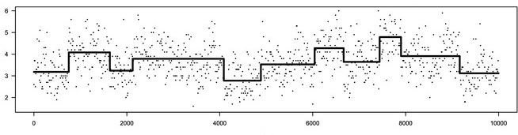
Electron emission spectroscopy data, Frick, K., Munk, A., & Sieling, H. (2014). ECG: Detecting changes or abnormalities in electrocardiogram (ECG) data can help in diagnosing heart conditions.
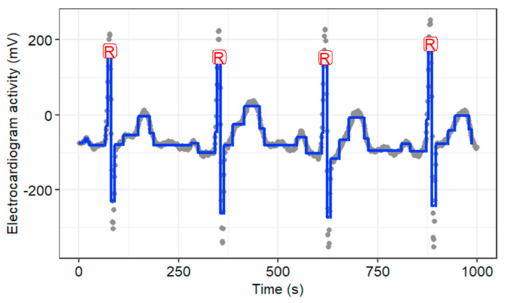
Electrocardiograms (heart monitoring), Fotoohinasab et al, Asilomar conference 2020. Cancer Diagnosis: Identifying breakpoints in DNA copy number data is important for diagnosing some types of cancer, such as neuroblastoma. This is a typical example of an offline analysis.
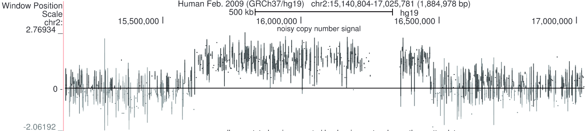
DNA copy number data, breakpoints associated with aggressive cancer, Hocking et al, Bioinformatics 2014. Engineering Monitoring: Detecting changes in CPU monitoring data in servers can help in identifying potential issues or failures: this is often analysed in real-time on with online methods, with the aim of detecting an issue as quickly as possible.
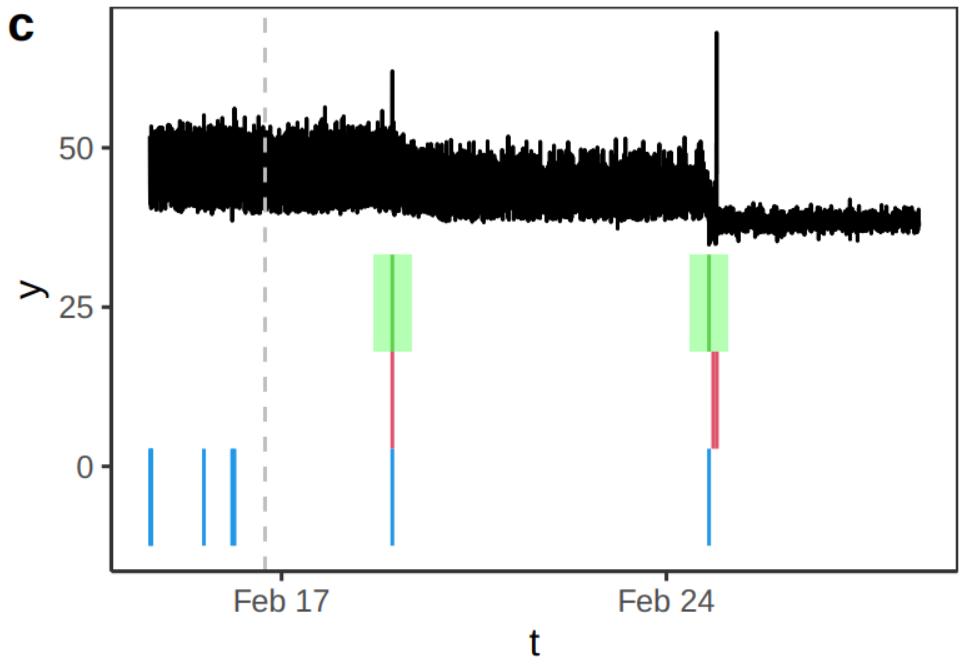
Temperature data from a CPU of an AWS server. Source Romano et al., (2023) Gamma Ray-Burst detection. Efficient online changepoint detection algorithms can detect gamma-ray bursts from gamma-ray counts on satellites in space. These bursts events happen in just a fraction of a second, and are related to supernova implosions.
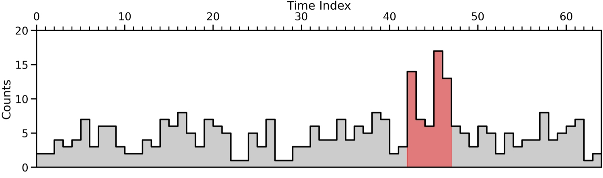
In this module, we will focus exclusively on offline changepoint detection, where we assume that all the data is available for analysis from the start.
1.2.1 Types of Changes in Time Series
Depending on the model, we could seek for different types of changes in the structure of a time series. Some of the most common types of changes include shifts in mean, variance, and trends in regression. For example, the CPU example above exihibited, in addition to some extreme observations, both changes in mean and variance.
- A change in mean occurs when the average level of an otherwise stationary time series shifts from one point to another.
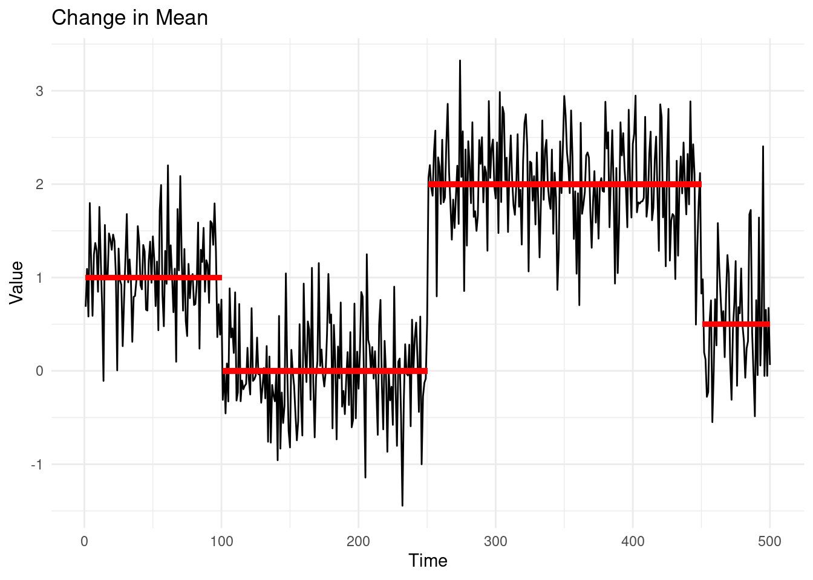
In the plot above, the red lines indicate the true mean values of the different segments.
- A change in variance refers to a shift in the variability of the time series data, even when the mean remains constant.
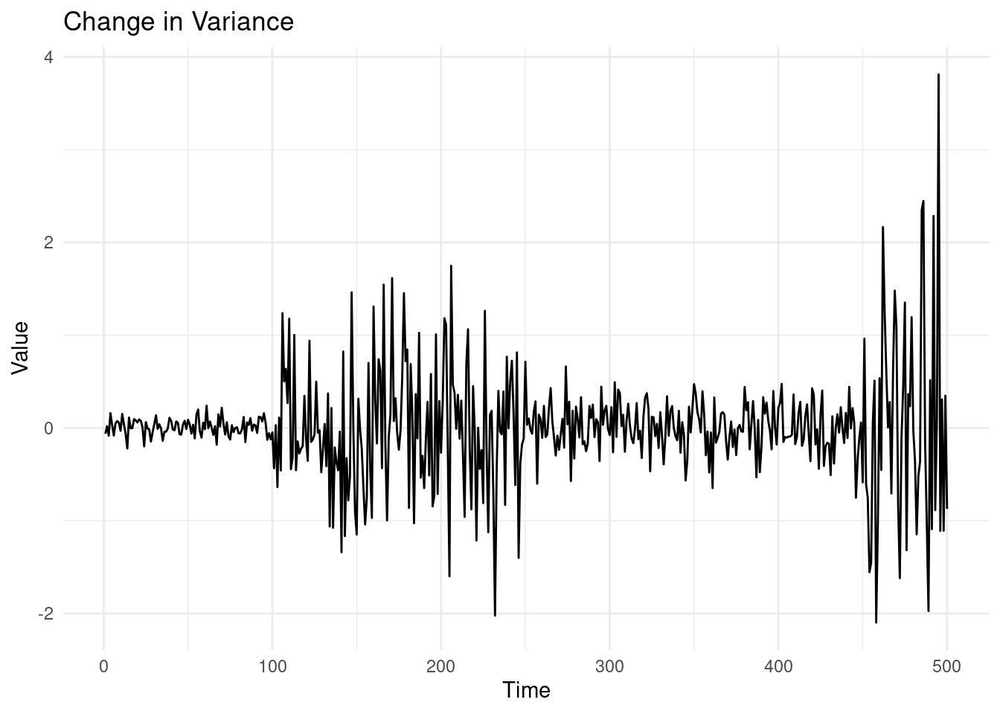
1.2.1.1 3. Change in Regression (Slope)
A change in regression or slope occurs when the underlying relationship between time, and/or other auxiliary variables, and the values of the time series changes.
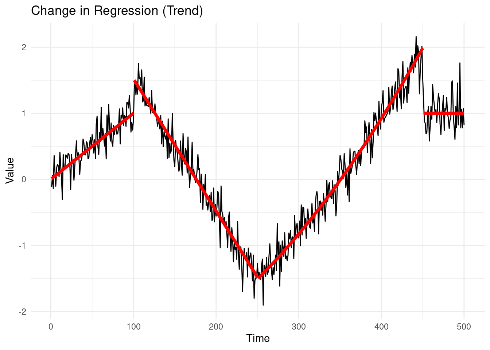
1.2.2 The biggest data challenge in changepoint detection
One of the most widely debated and difficult data challenges in changepoint detection may not be in the field of finance, genetics, or climate science—but rather in television history. Specifically, the question that has plagued critics and fans alike for years is: At which episode did “The Simpsons” start to decline?
It’s almost common knowledge that “The Simpsons,” the longest-running and most beloved animated sitcom, experienced a significant drop in quality over time. But pinpointing exactly when this drop occurred is the real challenge. Fortunately, there’s a branch of statistics that was practically built to answer questions like these!
I have downloaded a dataset (Bown 2023) containing ratings for every episode of “The Simpsons” up to season 34. We will analyze this data to determine if and when a significant shift occurred in the ratings, which might reflect the decline in quality that so many have observed.

In this plot, each episode of “The Simpsons” is represented by its TMBD rating, and episodes are colored by season. By visually inspecting the graph, we may already start to see some potential points where the ratings decline. However, the goal of our changepoint analysis is to move beyond visual inspection and rigorously detect the exact moment where a significant shift in the data occurs.
Jokes apart, this is a challenging time series! First of all, there’s not a clear single change, but rather an increase, followed by a decline. After which, the sequence seems rather stationary. For this reason, throughout the module, we will use this data as a running example to develop our understanding of various methods, hopefully trying to obtain a definitive answer towards the final chapters. But let’s proceed with order…
1.3 Detecting one change in mean
In this section, we will start by exploring the simplest case of a changepoint detection problem: detecting a change in the mean of a time series. We assume that the data is generated according to the following model:
\[ y_t = \mu_t + \epsilon_t, \quad t = 1, \dots, n, \]
where \(\epsilon_t \sim \mathcal{N}(0, \sigma^2)\) represents Gaussian noise with mean 0 and known variance \(\sigma^2\), and \(\mu_t \in \mathbb{R}\) is the signal at time \(t\), with \(\mathbb{E}(y_t) = \mu_t\). The vector of noise terms \(\epsilon_{1:n}\) is often referred to as Gaussian noise, and hence, this model is known as the signal plus noise model, where the signal is given by \(\mu_{1:n}\) and the noise by \(\epsilon_{1:n}\).
In the single change-in-mean problem, our goal is to determine whether the signal remains constant throughout the entire sequence, or if there exists a point \(\tau\), where the mean shifts. In other words, we are testing whether
\[ \mu_1 = \mu_2 = \dots = \mu_n \quad \text{(no changepoint)}, \]
or if there exists a time \(\tau\) such that
\[ \mu_1 = \mu_2 = \dots = \mu_\tau \neq \mu_{\tau+1} = \dots = \mu_n \quad \text{(changepoint at } \tau\text{)}. \]
Note. The point \(\tau\) is our changepoint, e.g. the last point after which our mean changes, however there’s a lot of inconsistencies on the literature: sometimes you will find that people refer to \(\tau + 1\) as the changepoint, and \(\tau\) as the last pre-change point (as a matter of fact, please let me know if you spot this inconsistency anywhere in these notes!).
To address this problem, one of the most widely used methods is the CUSUM (Cumulative Sum) statistic. The basic idea behind the CUSUM statistic is to systematically compare the mean of the data to the left and right of each possible changepoint \(\tau\). By doing so, we can assess whether there is evidence of a significant change in the mean at a given point.
1.3.1 The CUSUM statistics
We compare, for a fixed \(\tau \in \{1, \dots, n-1\}\) , the empirical mean (average) of the data to the left (before \(\tau\)) with the empirical mean of the data to the right (after \(\tau\)):
\[ C_{\tau} = \sqrt{\frac{\tau(n-\tau)}{n}} \left| \bar{y}_{1:\tau} - \bar{y}_{(\tau+1):n} \right|, \]
Our \(\bar{y}_{1:\tau}\) and \(\bar{y}_{(\tau+1):n}\) are just the empirical means of each segment, simply computed with:
\[ \bar{y}_{l:u} = \frac{1}{u - l + 1} \sum_{t = l}^{u} y_t. \]
The term on the left of the difference, is there to re-scale it so that our statistics is the absolute value of normal random variable that has variance \(\sigma^2\). If there is no change at \(\tau\), this difference is going to be distributed as a standard normal.
This approach is intuitive because if the mean \(\mu\) is the same across the entire sequence, the values of the averages on both sides of any point \(\tau\) should be similar. However, if there is a large-enough change in the mean, the means will differ significantly, highlighting the changepoint.
More formally, we declare a change at \(\tau\) if:
\[ \frac{C_{\tau}^2 }{\sigma^2} > c_\tau, \] where the \(c_\tau \in \mathbb{R}^+\) is a suitable chosen threshold value (in fact it is often chosen as in hypothesis testing). The \(\frac{C_{\tau}^2 }{\sigma^2}\) is known as the CUSUM statistics for a fixed change at \(\tau\).
1.3.2 Searching for all \(\tau\)s
In practice, however, we do not know the changepoint location in advance. Our goal is to detect whether a changepoint exists and, if so, estimate its location. To achieve this, we need to consider all possible changepoint locations and choose the one that maximizes our test statistic.
The natural solution to this situation is to use as a test statistic the maximum of \(C_\tau\) as we vary \(\tau\):
\[ C^2_{max} = \max_{\tau \in \{1,\ldots,n-1\}} C_\tau^2 / \sigma^2. \]
And detect a changepoint if \(C^2_{max} > c\) for some suitably chosen threshold \(c \in \mathbb{R}^+\). The choice of \(c\) will determine the significance level of the test (we’ll discuss this in more detail later). Graphically, the test will look as follows:
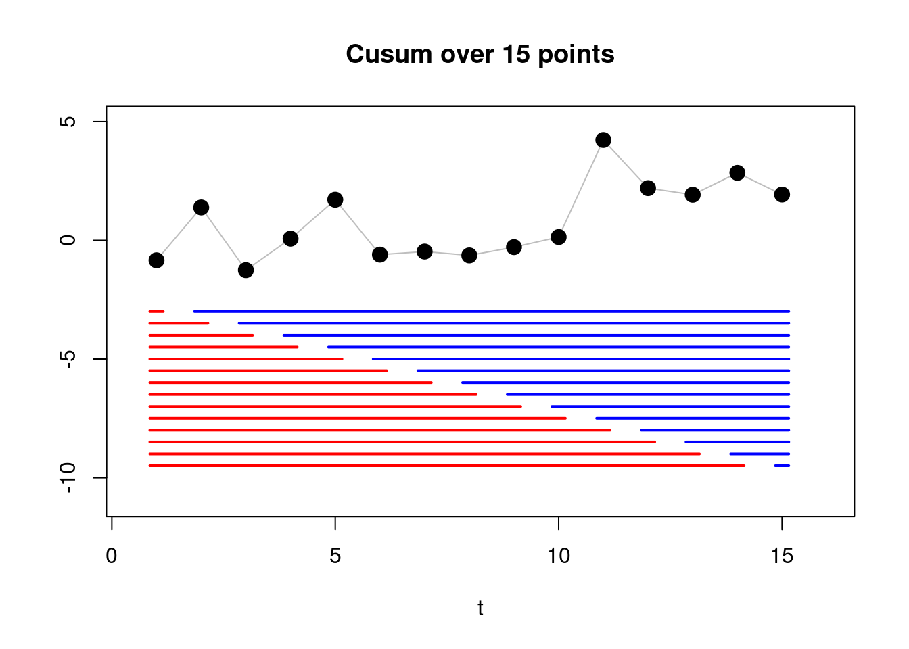
If we detect a changepoint (i.e., if \(C^2_{max} > c\)), we can estimate its location by:
\[ \hat{\tau} = \arg\max_{\tau \in \{1,\ldots,n-1\}} C_\tau^2. \]
In other words, \(\hat{\tau}\) is the value of \(\tau\) that maximizes the CUSUM statistic.
A simple estimate of the size of the change is then given by:
\[ \Delta\hat{\mu} = \bar{y}_{(\hat{\tau}+1):n} - \bar{y}_{1:\hat{\tau}}. \]
This estimate represents the difference between the mean of the data after the estimated changepoint and the mean of the data before the estimated changepoint.
1.3.3 Example
Let us compute the cusum for the vector \(y_{1:4} = (0.5, -0.1, 12.1, 12.4)\), assuming known \(\sigma^2 = 1\) variance.
We know that \(n = 4\) (the total number of observations), therefore possible changepoints are: \(\tau = 1, 2, 3\).
Compute empirical means for each segment
We first need to calculate the segment means, \(\bar{y}_{1:\tau}\) and \(\bar{y}_{(\tau+1):n}\), for each \(\tau\).
For \(\tau = 1\), the left segment is: \(y_{1:1} = (0.5)\), and \(\bar{y}_{1:1} = 0.5.\) The right segment: \(y_{2:4} = (-0.1, 12.1, 12.4)\) gives \(\bar{y}_{2:4} = \frac{-0.1 + 12.1 + 12.4}{3} = \frac{24.4}{3} = 8.13.\)
For \(\tau = 2\), we have, in a similar fashion, \(\bar{y}_{1:2} = \frac{0.5 - 0.1}{2} = 0.2\), \(\bar{y}_{3:4} = \frac{12.1 + 12.4}{2} = 12.25\),
Lastly, for \(\tau = 3\), we have \(\bar{y}_{1:3} = \frac{0.5 - 0.1 + 12.1}{3} = \frac{12.5}{3} = 4.16\) and \(\bar{y}_{4:4} = 12.4\).
Compute the CUSUM statistics
Now that we have the empirical means for each segment, we have all the ingredients for computing our CUSUM:
\[ C_{\tau} = \sqrt{\frac{\tau(n-\tau)}{n}} \left| \bar{y}_{1:\tau} - \bar{y}_{(\tau+1):n} \right|. \]
For \(\tau = 1\): \[ C_1 = \sqrt{\frac{1(4-1)}{4}} \left| 0.5 - 8.13\overline{3} \right| = 0.866 \times 7.63\overline{3} = 6.61. \]
For \(\tau = 2\): \[ C_2 = \sqrt{\frac{2(4-2)}{4}} \left| 0.2 - 12.25 \right| = 1 \times 12.05 = 12.05. \]
For \(\tau = 3\): \[ C_3 = \sqrt{\frac{3(4-3)}{4}} \left| 4.16\overline{6} - 12.4 \right| = 0.866 \times 8.23\overline{3} = 7.13. \]
Thus, the maximum of the CUSUM statistic occurs at \(\tau = 2\), with \(C_{max} = 12.05\). To detect a changepoint, we would compare \(C_{max}\) to a threshold value \(c\). If \(C_{max}^2 = 145.20 \geq c\), we conclude that there is a changepoint at \(\hat{\tau} = 2\).
1.3.4 Algorithmic Formulation of the CUSUM Statistic
This process seems rather long, as for every step, we need to precompute the means… A naive implementation of the cusum, in fact, takes \(\mathcal{O}(n^2)\) computations.
However, there’s an algorithmic trick: by sequentially computing partial sums, e.g. \(S_n = \sum_{i=1}^n y_i\), we can shorten out our computations significantly. In this way we can compute the value of the means directly as we iterate in the for cycle.
INPUT: Time series \(y = (y_1, ..., y_n)\), threshold \(c\), variance \(\sigma^2\).
OUTPUT: Changepoint estimate \(\hat{\tau}\), maximum CUSUM statistic \(C_{max}\)
\(n \leftarrow\) length of \(y\)
\(C_{max} \leftarrow 0\)
\(\hat{\tau} \leftarrow 0\)
\(S_n \leftarrow \sum_{i=1}^n y_i\) // Compute total sum of y
\(S \leftarrow 0\)
FOR \(t = 1, \dots, n - 1\)
\(S \leftarrow S + y_t\)
\(\bar{y}_{1:t} \leftarrow S / t\)
\(\bar{y}_{(t+1):n} \leftarrow (S_n - S) / (n - t)\) // Can you figure out why?
\(C^2_t \leftarrow \frac{t(n-t)}{n} (\bar{y}_{1:t} - \bar{y}_{(t+1):n})^2\)
IF \(C^2_t > C_{max}\)
\(C_{max} \leftarrow C_t^2\)
\(\hat{\tau} \leftarrow t\)
IF \(C_{max} / \sigma^2 > c\)
RETURN \(\hat{\tau}\), \(C_{max}\) // Changepoint detected
ELSE
RETURN NULL, \(C_{max}\) // No changepoint detected
OUTPUT: Changepoint estimate \(\hat{\tau}\), maximum CUSUM statistic \(C_{max}\)
\(n \leftarrow\) length of \(y\)
\(C_{max} \leftarrow 0\)
\(\hat{\tau} \leftarrow 0\)
\(S_n \leftarrow \sum_{i=1}^n y_i\) // Compute total sum of y
\(S \leftarrow 0\)
FOR \(t = 1, \dots, n - 1\)
\(S \leftarrow S + y_t\)
\(\bar{y}_{1:t} \leftarrow S / t\)
\(\bar{y}_{(t+1):n} \leftarrow (S_n - S) / (n - t)\) // Can you figure out why?
\(C^2_t \leftarrow \frac{t(n-t)}{n} (\bar{y}_{1:t} - \bar{y}_{(t+1):n})^2\)
IF \(C^2_t > C_{max}\)
\(C_{max} \leftarrow C_t^2\)
\(\hat{\tau} \leftarrow t\)
IF \(C_{max} / \sigma^2 > c\)
RETURN \(\hat{\tau}\), \(C_{max}\) // Changepoint detected
ELSE
RETURN NULL, \(C_{max}\) // No changepoint detected
For this reason, the time complexity of the CUSUM algorithm is \(O(n)\), where \(n\) is the length of the time series.
1.3.5 Example: a large sequence
We can see how the value \(C^2_t\) in the algorithm above behaves across different values of \(t = 1, \dots, n-1\) in the example below:
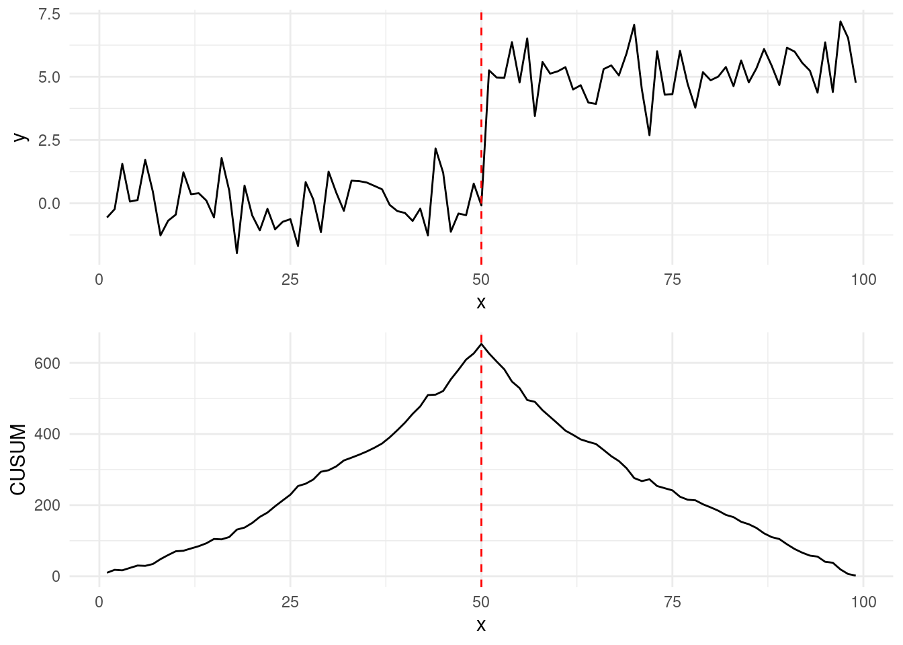
Running the CUSUM test, and maximising on our Simpsons episode, results in:
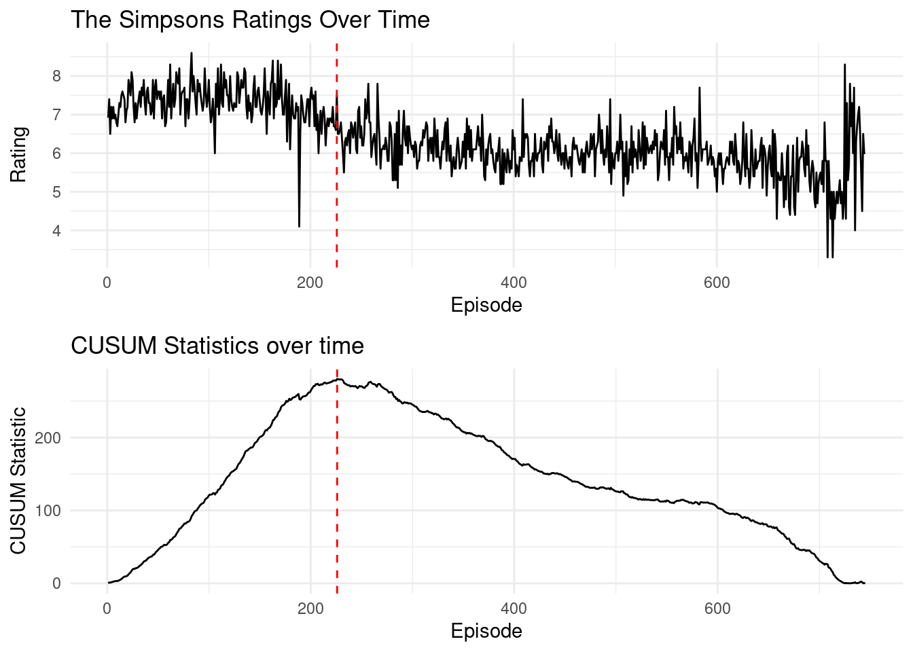
This results in episode Thirty Minutes over Tokyo being the last “good” Simpsons episode, with Beyond Blunderdome being the start of the decline, according to the Gaussian change-in-mean model!
1.4 Exercises
1.4.1 Workshop 1
Determine if the following processes are stationary, piecewise stationary, or non-stationary:
\(y_t = y_{t - 1} + \epsilon_t, \quad \ t = 2, \dots, n, y_1 = 0, \epsilon_{t} \sim N(0, 1)\). This is a random walk model. Let’s start by computing the expected value and variance of \(y_t\) across all \(t\). TIP: Start by expanding \(y_{t}\) in terms of the noise components…
\(y_t = t \epsilon_t + 3 \mathbb{1}(t > 50), \quad t = 1, \dots, 100, \quad \epsilon_{t} \sim N(0, 1)\)
\(y_t = 0.05 \cdot t + \epsilon_t, \ t = 1, \dots, 100, \quad \epsilon_{t} \sim N(0, 1)\)
For an i.i.d. Gaussian time series \(y = (y_1, ..., y_n)\) with known variance \(\sigma^2\), and fixed and known change at \(\tau \in \{1, \dots, n-1\}\), with \(\, n \in \mathbb{N}, \, n > \tau\), show that: \[ \frac{1}{\sigma}\sqrt{\frac{\tau(n-\tau)}{n}} ( \bar{y}_{1:\tau} - \bar{y}_{(\tau+1):n}) \] in case of no change, e.g. for \(\mu_1 = \mu_2 = \dots = \mu_n = \mu\), follows a standard normal distribution. Hint:
Compute the expected value and variance of the difference \(\bar{y}_{1:\tau} - \bar{y}_{(\tau+1):n}\)
Conclude that if you standardise the sum, this follows a standard normal distribution.
1.4.2 Lab 1
Code the CUSUM algorithm for a unknown change location, based on the pseudocode of Section Section 1.3.4.
Modify your function above to output the CUSUM statistics over all ranges of tau.
Recreate the “CUSUM Statistics over time” plot for the Simpsons data above.
- You’ll be able to load the dataset via:
library(tidyverse)
simpsons_episodes <- read_csv("https://www.lancaster.ac.uk/~romano/teaching/2425MATH337/datasets/simpsons_episodes.csv")
simpsons_ratings <- simpsons_episodes |>
mutate(Episode = id + 1, Season = as.factor(season), Rating = tmdb_rating)
simpsons_ratings <- simpsons_ratings[-nrow(simpsons_ratings), ]
# run your CUSUM algorithm on the Rating variable!To run it on the whole sequence, you’ll have to set the threshold \(c = \infty\).
Assume \(\sigma^2 = 1\)